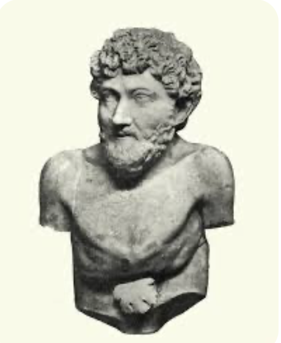

(S.VI a.C.) Escritor griego. Uno de los más antiguos géneros de la literatura universal es la fábula, un tipo de relato breve protagonizado por animales personificados cuya finalidad didáctica se explicita en una moraleja final. La Grecia clásica atribuyó a Esopo la invención de este género, igual que asignó a Homero la paternidad de la épica.
Hasta muchos siglos después no se dudó de la existencia efectiva de ambos, señalando además la perfecta antítesis entre las dos figuras: Homero como cantor de las gestas de los héroes, Esopo como retratista de la plebe, de las debilidades humanas bajo aspecto de animales. En ambos casos, numerosas ciudades se disputaron el honor de ser su cuna.